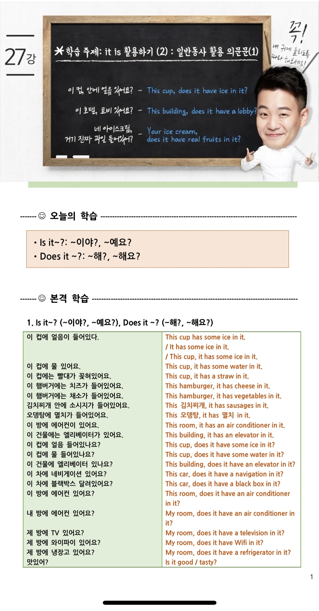
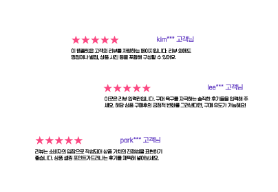
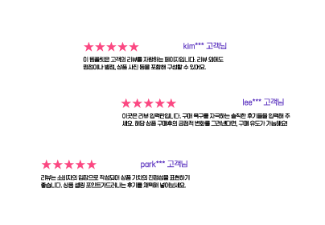

시원스쿨 영어 쉐도잉 100일 완성 중급도 눈 깜박할 사이 막바지에 이르렀다. 직장 생활 하면서 외국어 공부나 무언가 다른 취미 생활을 한다는게 쉽지는 않는 것 같다. 쉬고 싶지만 매일매일 빠지지 않고 강의를 듣고 녹음해서 틈나는 대로...
현 시원스쿨 그래머인유즈 인터미디엇 강좌를 수강하고 있는 학생입니다. 개인적으로 이 강좌 진짜 추천합니다 여러 구문 표현들도 많이 알려주시고 정말 친절하세요 강추!

기적의 100일 챌린지 시작한지 어느덧 89일차입니다. 영상 시간은 보통 20분~30분 내외로 끝나서 퇴근하거나 출근길에 한번씩 듣기에 좋아요~영상이 끝나면 오늘 내가 배웠던것에 대해 같이 구매했던 워크북에 작성해보며 오늘 내가 잘 공...
 

시원스쿨 영어 쉐도잉 100일 완성 중급도 눈 깜박할 사이 막바지에 이르렀다. 직장 생활 하면서 외국어 공부나 무언가 다른 취미 생활을 한다는 게 쉽지는 않는 것 같다. 쉬고 싶지만 매일매일 빠지지 않고 강의를 듣고 녹음해서 틈나는 대로 복습하고 못 다한 것은 주말에 주로 Repeat Player로 학습하고 있다. 오늘은 스키대 스노보드에 대한 미니 토론을 하는 내용이다. 이번 강의에서 새롭게 알게 된 것은 Classic 이란 의미가 문맥에 따라 다양하게 사용되는 점이다. 일반적으로 '전통적인', '최고의' 이러한 뜻이 있는데 That's clasis 늘 그런 식이지! 이라고 표현된다 점. 그리고 일반적으로 나는 다른 생각을 가지고 있다를 I don't agree, 혹은 I don't think so 이렇게 말할 수 있지만 I have a different opinion 이라고 표현할 수도 있다는 것이다.
시원스쿨 영어 쉐도잉 100일 완성 중급도 눈 깜박할 사이 막바지에 이르렀다. 직장 생활 하면서 외국어 공부나 무언가 다른 취미 생활을 한다는 게 쉽지는 않는 것 같다. 쉬고 싶지만 매일매일 빠지지 않고 강의를 듣고 녹음해서 틈나는 대로 복습하고 못 다한 것은 주말에 주로 Repeat Player로 학습하고 있다. 오늘은 스키대 스노보드에 대한 미니 토론을 하는 내용이다. 이번 강의에서 새롭게 알게 된 것은 Classic 이란 의미가 문맥에 따라 다양하게 사용되는 점이다. 일반적으로 '전통적인', '최고의' 이러한 뜻이 있는데 That's clasis 늘 그런 식이지! 이라고 표현된다 점. 그리고 일반적으로 나는 다른 생각을 가지고 있다를 I don't agree, 혹은 I don't think so 이렇게 말할 수 있지만 I have a different opinion 이라고 표현할 수도 있다는 것이다.
시원스쿨 영어 쉐도잉 100일 완성 중급도 눈 깜박할 사이 막바지에 이르렀다. 직장 생활 하면서 외국어 공부나 무언가 다른 취미 생활을 한다는 게 쉽지는 않는 것 같다. 쉬고 싶지만 매일매일 빠지지 않고 강의를 듣고 녹음해서 틈나는 대로 복습하고 못 다한 것은 주말에 주로 Repeat Player로 학습하고 있다. 오늘은 스키대 스노보드에 대한 미니 토론을 하는 내용이다. 이번 강의에서 새롭게 알게 된 것은 Classic 이란 의미가 문맥에 따라 다양하게 사용되는 점이다. 일반적으로 '전통적인', '최고의' 이러한 뜻이 있는데 That's clasis 늘 그런 식이지! 이라고 표현된다 점. 그리고 일반적으로 나는 다른 생각을 가지고 있다를 I don't agree, 혹은 I don't think so 이렇게 말할 수 있지만 I have a different opinion 이라고 표현할 수도 있다는 것이다.
시원스쿨 영어 쉐도잉 100일 완성 중급도 눈 깜박할 사이 막바지에 이르렀다. 직장 생활 하면서 외국어 공부나 무언가 다른 취미 생활을 한다는 게 쉽지는 않는 것 같다. 쉬고 싶지만 매일매일 빠지지 않고 강의를 듣고 녹음해서 틈나는 대로 복습하고 못 다한 것은 주말에 주로 Repeat Player로 학습하고 있다. 오늘은 스키대 스노보드에 대한 미니 토론을 하는 내용이다. 이번 강의에서 새롭게 알게 된 것은 Classic 이란 의미가 문맥에 따라 다양하게 사용되는 점이다. 일반적으로 '전통적인', '최고의' 이러한 뜻이 있는데 That's clasis 늘 그런 식이지! 이라고 표현된다 점. 그리고 일반적으로 나는 다른 생각을 가지고 있다를 I don't agree, 혹은 I don't think so 이렇게 말할 수 있지만 I have a different opinion 이라고 표현할 수도 있다는 것이다.